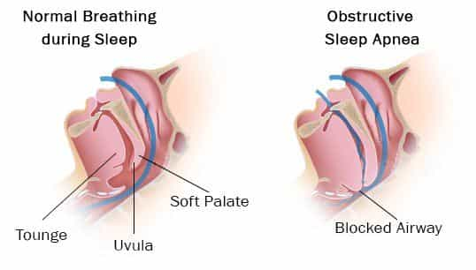
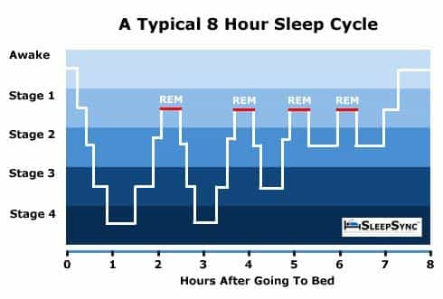
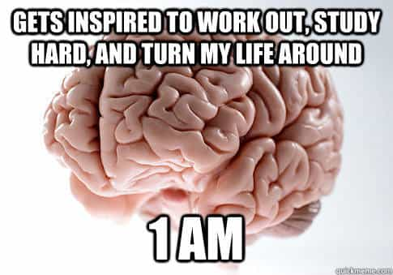

Corey is an iconoclast and the author of 'Man's Fight for Existence'. He believes that the key to life is for men to honour their primal nature. Visit his new website at primalexistence.com


I’ve suffered from insomnia due to various reasons ever since I was a boy. It was especially tough to go through the day during my high school and university days trying to focus in classes and study without energy while doing all I can to avoid dozing off. As a result of my insomnia, my grades suffered, I felt depressed most of the time, and I swear I would’ve grown at least three inches taller had I gotten proper sleep during my developmental years.
You don’t realize just how important sleep is until you suffer from its loss. As strange as it may sound, as a basic bodily function responsible for your growth, recovery, and testosterone production that leads to better focus and productivity, I think it’s safe to say that maintaining a healthy sleep hygiene is the most masculine thing you can do for your body besides lifting weights.
The following is a collection of my knowledge based on around a decade of personal experience, research, trial and error, and working in a sleep clinic. My sleep is still not perfect, but I have made vast improvements by following these methods.

If you suffer from poor sleep regardless of how long you pass out during the night, the first thing you should do is to rule out the possibility of a sleep apnea. Without getting too technical, sleep apnea is an obstruction of your airway during sleep that reduces the oxygen flow to your brain and causes many small wake ups throughout the night as your body tries to get you to breathe properly again. The sufferer may wake up fully during the night or will never reach a prolonged state of deep sleep without even being aware of it.
The signs and symptoms are:
You are also more likely to suffer from an apnea if you are obese or happen to be an Asian male.
If you suspect that you suffer from a sleep apnea, the best thing to do is to go to a sleep clinic to get yourself tested and go from there. But you can still apply the other principles here to improve your overall sleep hygiene.
Surest way to have a lousy sleep.
It’s really simple: You want your mind and body to associate your bed only with sleeping. This means no working, eating, reading, watching television, or going on your mobile device while you’re on your bed. The bed is only for sleeping and the other type of “sleeping.” And considering how our brain processes a room as one environment, I’ll go as far as to say that you should avoid doing anything other than sleeping in your bedroom. So, if you have a computer in the same space as your bed, move it out. If you have a desk in your bedroom for reading or studying, move it out. Do all non-essential activities outside of your bedroom.
Now, some people swear that reading or watching television in bed helps them fall asleep, but I highly discourage it for it could lead to poor sleeping habits.
For me, this was the biggest issue which even the doctors couldn’t figure out. I suffered from a severe insomnia due to thirst and a burning sensation that would hit me in middle of the night. It seems idiotically obvious now, but I finally realized that the problem had come from the fact that I was in the habit of eating spicy food for dinner.
If you’re sensitive to spicy or salty food like I am, it’s best to avoid those types of food for the evening along with other heavy food that are high in fat and protein. In fact, it’s best not to eat anything so close to bed time as your stomach will be busy working while you’re trying to sleep. My sleep improved drastically when I started going to bed with an empty stomach by avoid eating anything past 6pm.

It’s tempting to drink coffee or even an energy drink when you’re sleepy, but if you’re an insomniac, you must resist the urge to escape the the cycle of misery. I would also avoid anything loaded with sugar (it’s bad for you anyway) and avoid alcohol as well. A glass of wine may help you fall asleep, but the quality of your deep sleep will suffer without you knowing it.

Your mind and body has a clock of its own and it likes to stick to a schedule. Always try to go to bed at the same time and wake up at the same time to maintain optimal sleep hygiene. It is especially important to get up at the same time every morning to train your body to maintain sleep discipline. If you happen to have trouble falling asleep or staying asleep, you can start tweaking your sleep time by shortening your sleep schedule and going to bed an hour later than usual. It might be painful and take some time to adapt to, but your brain will eventually learn to make the most out of the hours you allot it.

The more your body can differentiate day and night, the more active you’ll feel during the day while being able to sleep better during the night. This is the work of your sleep hormone, melatonin, as it is produced in dark while suppressed in light, and why it’s very important to get enough sunlight throughout the day—and especially in the morning. You should always try expose your eyes to light as soon as you wake up (sunlight was the natural alarm clock for our ancestors). As an added bonus, exposing your eyes to light early in the morning will also boost your testosterone and sex drive.
If you live somewhere north with lack of natural sunlight, it’s well worth the investment to purchase a sun lamp for light therapy. In comparison, the average lights we use indoors are pitiful, so it does little to nothing to help maintain our sleep hygiene.
This must be the most important point of all as sleep only seems to happen naturally when you give your body a reason to rest. I’ve seen documentaries of African tribes that sleep on dirt floor in a mud hut shared by the entire family. They sleep like they passed out even with insects crawling all over them because they walk and labor all day. If you want a better sleep, you must be physically active throughout the day.
For those who think hitting the gym is enough, lifting weights is great and all, but if you want to improve your sleep and, therefore, your overall health, you must add regular cardio workout to your routine. Running and swimming are both excellent as they pump your heart and really force you to work on your breathing. That said, you don’t even have to do some major cardio session on a daily basis just to get a decent sleep. Even going out for a walk can make all the difference. For example, if I spend more than 5 hours in my home reading, writing, and surfing the Internet, the chance of having an insomnia that night is around 30%; but if I spend three hours walking outside in the sun, it gets reduced to less than 10%. Sedentary lifestyle really is a disease.

Most people in the northern hemisphere tend to sleep too warm for their own good. This is usually a problem during cold winters when some people jack up the heater without knowing that it can have an adverse effect on their sleep (as well as causing you to get sick). Your body tends to adapt to the season, so if your room is too warm, your body won’t feel comfortable enough to get a good sleep. In addition, heaters will cause your home to get too dry, which will negatively affect your breathing. It’s best to keep your heater use to the minimum and just use extra thick blankets instead. If you’re in doubt, err on the side of sleeping too cold rather than too warm.
I’m not against taking naps (in fact, they’re great as long as it doesn’t affect your ability to sleep at night), but if you suffer from chronic insomnia, it might be worth to resist the temptation to sleep during the day so that you can sleep better at night. But if you insist on taking naps, try not go for more than an hour; 20 to 30 minutes sometime in the early afternoon is optimal.

When you’ve decided that you’re going to hit the bed, you need to empty your mind of all thoughts to prepare for sleep. You should not be thinking at all and just bask in the glory of how great it feels to be in bed for your slumber.
To do this, some people meditate just before going to bed, few write down a list things they’ll do the next day so that they won’t think about it in bed, and others simply tell themselves (some verbally) that they’re going to sleep and that they’re shutting down their minds for rest. Once you’re in bed, short of a life-threatening emergency, there’s nothing urgent enough that it should bother you from within—let it wait until the next day.
Read More: How Boredom Kills Your Workouts And How To Overcome It